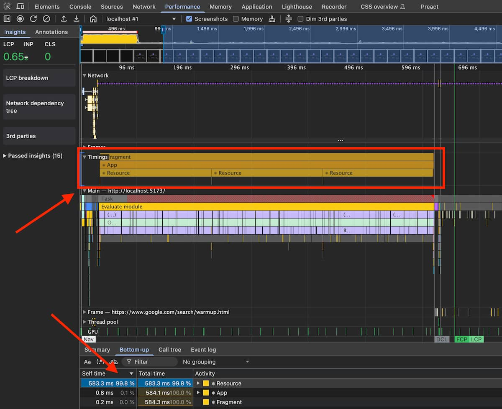
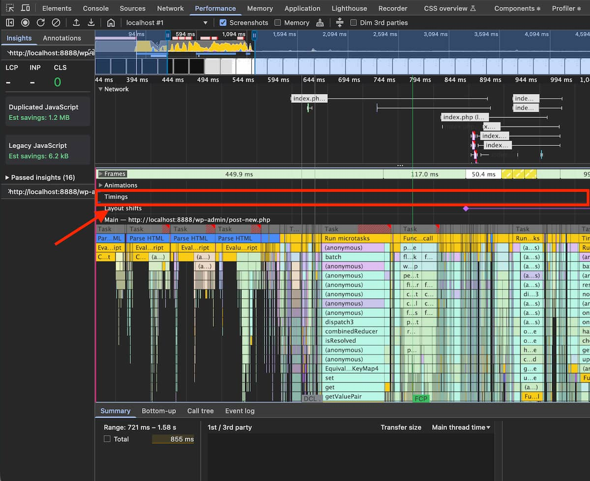

JS-heavy approaches are not compatible with long-term performance goals
This post is a (very long) opinion piece, albeit one that I hope is somewhat substantiated by the accompanying anecdotes. The TL;DR is that in my experience the title is a correct statement the vast majority of the time, and we should favour more server-centric approaches instead, when possible.
What I mean by “JS-heavy approaches“
I use this term to refer to any approach that relies on shipping large quantities of JS to the browser, for the browser to execute as an intrinsic part of using the web app, often in the critical path. These sorts of approaches are usually associated with Single-page Applications (SPAs), but do unfortunately pop up in Multi-page Applications (MPAs) as well.
Background
My experience
In case you don’t know me, hi! 👋 I work full-time on web performance at Automattic, as part of a small PerfOps team whose mission is to improve performance across the various things we build or work on as a company. Our team also builds and maintains our company’s performance monitoring infrastructure, but the majority of our time is spent finding and fixing performance issues across our various stacks, all the way from optimising DB queries to fixing janky CSS animations.
Personally, I specialize on the browser side of things. As part of this work, I have had more than my share of debugging sessions for loading performance issues, runtime performance problems, bundle size increases, framework-specific issues like expensive re-renders in React, etc., and there are some underlying root causes I’ve seen over and over again. These problems are not necessarily insurmountable, but they do add up to reveal some important gaps and outright falsehoolds in the narrative about the “modern web development approach” that we’ve been sold over the years.
Caveats
I don’t think I’ll necessarily bring any groundbreaking revelations to the table, nor do I come with a large corpus of data to back anything up as the unquestionable truth. This is all based on my own experience, and may not apply to what any given project is doing, particularly if it’s a small web app maintained by a focused, dedicated team.
Also note that I’ll be jumping between different aspects of web performance throughout the post, without much thought. That’s because while they’re all distinct, they’re all important! You don’t want to have an application that takes forever to load, any more than one that is sluggish at rendering the characters the user is typing, or one that has a disruptive delay on in-app navigations.
The pitch and the reality of frameworks
With the caveats out of the way, let’s look at the main topic: the long-term performance characteristics of “modern” development, which most of the time involves frameworks of some sort, like React.
Yes, React is a framework
I know there’s some discussion on whether React is a framework or not, with some folks — notably, the authors and maintainers — insisting on calling it a library. I don’t know why they do it, but it’s frankly wrong, as far as agreed-upon terms and shared vocabulary go.
In Computer Science, the commonly accepted distinction between the two is that a library is something that your code calls into, while a framework is something that you relinquish control unto, so that it calls your code instead, at the appropriate time. That is, a framework works through Inversion of Control, and a library does not.
By this definition, React is a framework, because an idiomatic React application overwhelmingly consists of code that gets called by React, and lives under its control.
Frameworks like React are often perceived as accelerators, or even as the only sensible way to do web development. There’s this notion that a more “modern” stack (read: JS-heavy, where the JS ends up running on the user’s browser) allows you to be more agile, release more often with fewer bugs, make code more maintainable, and ultimately launch better sites. In short, the claim is that this approach will offer huge improvements to developer experience, and that these DevEx benefits will trickle down to the user.
But over the years, this narrative has proven to be unrealistic, at best. In reality, for any decently sized JS-heavy project, you should expect that what you build will be slower than advertised, it will keep getting slower over time while it sees ongoing work, and it will take more effort to develop and especially to maintain than what you were led to believe, with as many bugs as any other approach.
Where it comes to performance, the important thing to note is that a JS-heavy approach (and particularly one based on React & friends) will most likely not be a good starting point; in fact, it will probably prove to be a performance minefield that you will need to keep revisiting, risking a detonation with every new commit.
Roadmap
In this post, I’ll start by looking at some of the underlying causes for the most common categories of problems I’ve seen, and follow that up with mitigation strategies you can adopt to prevent some of them.
After that, I’ll reflect on whether JS-heavy approaches are worth it, whether performance is optional, and then explore server-centric development as an alternative, and why it tends to do better.
I’ll then finish up with my plea to our industry to change the way we do things.
The problems
Dependencies are expensive
One of the more immediate problems is that JS-heavy development approaches often deeply rely on the npm global package repository for runtime JS (i.e., the JS that the user’s browser will run). While this can be a great shortcut for getting something out the door quickly, it can come with some less-than-obvious costs, often measured in bytes on your bundle.
Note: while bundle size isn’t a metric that your users experience directly, most of the time it correlates strongly with ones that do (such as the various paint metrics), particularly in scenarios where large portions of your application get loaded as part of the critical path.
It’s unfortunately common to pull large packages into your bundle, such as huge libraries for time and timezone management, extensive collections of JS utility functions, and entire component systems to kickstart your UI building. Some of these packages are well-designed, and built to be small and modular, so that you only pay for what you use. Many of them are not, however, and end up being monolithic, or close to it, due to their design (e.g. fluent APIs like moment), due to heavily reusing themselves internally (e.g. lodash-es), or due to failing to account for what bundlers need in order to perform effective tree-shaking.
Large dependencies are often bad enough on their own, but sadly, it gets worse: many of these packages grow larger over time. Which means that not only do we carry a ball and chain around, it keeps getting heavier!
- For example,
momenthas had a 10% increase in size over the last 5 years. Not outrageous, but lots of small increases like this across a number of dependencies do add up. react-domhas steadily grown over the years, and going from v18 to v19 alone results in a 33% increase in bundle size for a basic Hello World app.
These increases are often hidden under the hood, and not something you’d easily come across, as most tools don’t give you this information by default:
npmwon’t tell you how large a package is when you install or update it.- Many bundlers don’t show your bundle size at the end of a build (although some of the more recent ones like
ViteorRsbuild, do). - Your IDE or editor won’t tell you how much an import will add to your bundle unless you’ve specifically added a plugin for this.
- If you have a tool like
dependabotset up on your repo, it will helpfully point out that new versions are available and even prepare the upgrade PRs for you — but it won’t warn you that the new version is 20% larger.
And to make matters worse, sticking to the previous version of a package is often not an option, because the new version includes security or bug fixes, or because another package is forcing you to upgrade a shared dependency.
But let’s say you were mindful when picking your dependencies, and you carefully vet each version upgrade not to balloon your bundle size. You’re also cautious about not adding too much code yourself. Does that mean your web app will be fast?
It’s easy to make it slow
A robust, developer-friendly system should make it easier to do the right thing than the wrong thing. It’s usually not feasible to make mistakes outright impossible, but it’s generally enough to ensure that following the wrong approach involves extra friction.
Unfortunately, where it comes to performance, JS-heavy development approaches often behave the opposite way: they make it easier to do the wrong thing than the right thing.
I’ll focus on React and Redux in some of my examples since that is what I have the most experience with, but much of this applies to other frameworks and to JS-heavy approaches in general. All of the following are issues I came across multiple times, in separate codebases:
- It’s often much easier to add things on a top-level component’s context and reuse them throughout the app, than it is to add them only where needed. But doing this means you’re paying the cost before (and whether) you need it.
- It’s much simpler to add something as a synchronous top-level import and force it to be present on every code path, than it is to load it conditionally and deal with the resulting asynchronicity.
- Setting up a bundler to produce one monolithic bundle is trivial, whereas splitting things up per route with shared bundles for the common bits often involves understanding and writing some complex configuration.
- It’s less work to build a
Reduxreducer that blindly rewrites an entire subtree and leads to unnecessary rerenders, than it is to have it check to see if changes are needed. - It’s much more straightforward to write a
Reduxselector that blindly runs a.map()to generate a new array everytime, than it is to memoise the results correctly. - If you forget to use memoisation on a single prop, your component might now rerender every time something innocuous happens. And if it’s a root-adjacent component, that means potentially a large portion of your render tree needs to be recalculated.
- It’s a lot less work to load your entire application state (i.e., all reducers) in the critical path, than it is to split things up so that only the relevant portions of state get loaded on each route.
- It’s often much easier to wrap each of your SVG icons in JSX than it is to set things up to load them from an external
.svgfile with SVG<use>.
This is compounded by the fact that developers are often taught the wrong approach by tutorials or other documentation resources. In an effort to make things easier to understand and learn, the code is kept simple — and as we’ve seen, the straightforward strategy is often the wrong one, at least where performance is concerned. Sometimes the docs go on to mention that they’re showing a simplified snippet of code and production code might need to be different. Sometimes they don’t.
These approaches are fragile, and make it easy for anyone to break performance at any time.
Which leads me to the next point. How likely is it that an initially fast JS-heavy app remains fast throughout development?
It’s hard to keep it fast
If a system is fragile, it means that it even if it starts out solid, it will be hard to keep it intact as time goes by.
The unfortunate reality is that some of these performance issues are watershed moments, in that a single wrong move can effectively render all your previous efforts to avoid a given class of performance problems moot:
- If you’ve carefully made every usage of a library conditional and asynchronous, it only takes a single static import somewhere in the critical path for the library to now need to be parsed, compiled, and executed before your site gets a chance to render.
- If you’ve painstakingly removed every instance of a large monolithic library like
moment, it only takes a single import for it to come back in its entirety. - If you’ve isolated an endpoint from as much of the rest of the application as possible, it might only take a single import in that endpoint or in the shared core for a huge amount of code to pour back in.
- It only takes a single, poorly-coded
Reduxselector or reducer to potentially affect performance on every action.
These problems may be obvious to you as an experienced developer, but they might not be to someone who joined the team recently, or a coder whose experience mostly involves other frameworks or libraries. Any system that relies on developer discipline to maintain performance (or any other characteristic, really) is a fragile thing that requires constant vigilance, particularly for large teams or projects.
So while it may be easy to resolve the situation by rolling back the change or fixing the new code, the reality is that if you’re not carefully monitoring your web app, you might miss the problem entirely and unwittingly leave things in a worse state than before, despite all the work you had done to prevent the problem in the first place.
I’ve seen it happen time and time again over the years; some kinds of performance improvement efforts don’t tend to last for very long, because it’s just so easy to break things again.
“Okay”, you might think, “but these frameworks and friends claim to be focused on developer experience, which means they surely must come with some great tools for debugging performance issues too, right?”
Unfortunately, that’s often not the case.
It’s hard to debug performance issues
Performance is never easy to debug, even at the best of times.
That said, over the years, browser engines have put an incredible amount of effort into building robust web development tooling. Browser Dev Tools pretty much let you peer into every aspect of your site’s performance, and even into what the browser itself is doing while it loads and renders your site. They show you easy to understand waterfalls for resource loading, and helpful flamecharts for JS execution and rendering. They can throttle CPU and network, and run detailed profiles that combine all sorts of information. They can even now analyse those profiles for you, to point out problems and offer suggestions! These tools easily match and often exceed their server-side counterparts, and they’re a wonderful perk that we rely on daily.
Which is why it’s incredibly frustrating when frameworks like React, which again ostensibly pride themselves on being developer-friendly, throw all of that away to build their own Dev Tools. Poorly.
This is not the case with every framework, mind you; for instance, Preact takes the right approach, in enhancing the existing browser DevTools with framework-specific information. So if you run a browser profile on your Preact web app with their Dev Tools enabled, you’ll get some helpful markers added to the native browser profile, indicating when a component renders, for example. This lets you make sense of what’s happening in the browser layer as a result of the framework layer, so you can more quickly zero in on the code that’s seemingly causing a lot of garbage collection passes, or the component that’s triggering layout refreshes at an inconvenient time.

Preact-level timing information gets added to browser profiles, and is available to built-in functionality like the aggregate table of where time was spent. Great stuff! 👍But that’s not the case with React: it has its own tools, which are entirely separate. You can run a React profile, but it doesn’t create a browser profile to go with it, and you have no way of combining React information with the JS sampling information from the browser to get a complete picture of where time is being spent. This means that often, even if you manage to figure out that the problem is in, say, a particular component’s commit to the DOM, you’re unable to understand why. You might need to resort to reproducing the problem twice (once for each profiler), carefully comparing the two separate profiles, and performing some leaps of logic.

React DevTools, browser profiles don’t include any React-level timing information 😞In addition, the React DevTools profiler can be hard to use (from a UI point of view), and is missing essential information, like an aggregate view of where time was spent.
And this is not just a problem with React Dev Tools. The debugging information you need is often not available, and even when it is, you’re frequently forced to jump through extra hoops:
- In a server-side rendered
Reactapp, if your hydration fails and your application needs to render from scratch (a performance problem, in that you’re losing the SSR optimisation), the error messages are often a uselessDid not expect server HTML to contain a <div> in <main>.or similar, even when running a debug build. Good luck finding that<div>! ReduxDev Tools don’t include any mechanism to help you find and debug slow reducers or selectors.- Debugging performance issues often requires you to find out about and switch to the “profiling“ build of your frameworks, if they exist at all. If you use a debug build instead, your timings won’t be meaningful, leading you to spend time trying to fix phantom issues; and if you use a production build, you’ll be missing the symbols that help you make sense of what’s happening.
- To my knowledge, none of the bundlers default to building a map of what’s inside your bundle, for help with bundle size debugging if needed. Most of the time you need to find out about, install, and configure a separate plugin manually.
Now, don’t get me wrong: the web platform can be a challenging performance environment on its own, with plenty of quirks to be aware of. But frameworks rarely address those definitively (if at all), and in fact make debugging performance harder than the baseline, because they add additional layers of abstraction.
The bigger the mismatch between a framework’s programming model and the underlying platform’s, the bigger the opportunity for complicated performance problems to arise in the interface between the two. So it sure would be nice if they would at least help with that part!
Mitigating the problems
So now that we know the problems and how easy it is for them to show up, what can we do about it? If you’re stuck building a JS-heavy client-side app, don’t despair! There are still actions you can take to improve your chances of making it faster, and keeping it from getting too slow over time.
Be warned, though: in my experience, you shouldn’t expect a consistently performant app, even if you follow all of these suggestions. But following them will help with stopping the bleeding and keeping things from getting too bad without you noticing.
Before you start
- Make sure everyone is on the same page about performance. You might need to convince some non-technical folks by showing them industry studies that link page performance to business metrics like conversions. As for developers, you may need to remind them that their development devices and connections aren’t a good benchmark for “good enough”, since most users will unfortunately be relying on something significantly worse.
- Define your performance budget. While there are some standard numbers across the industry, such as the thresholds Google recommends for its Core Web Vitals metrics, not every project is the same. Depending on your audience and use-case, you may need to be more (or less) ambitious in your goals, or pick different metrics entirely. The key thing is to define them ahead of time, and stick to them during development, avoiding the temptation to move the goalposts to fit the outcome.
- Carefully choose your architecture and tech stack. Now’s a good time to figure out whether your client-side application should have a server-side aspect to it, to speed up initial renders. This is especially important if you have API calls in your critical path, and doubly so if they’re sequential in any way. Also, take the opportunity to research what’s out there, and pick the frameworks, libraries, and general approach that best fit your needs.
Early in development
- Set up code splitting. A lot of development environments give you this essentially for free, but many others unfortunately do not.
- Make sure that your bundler outputs multiple chunks, that are split in a reasonable way (e.g. per route).
- Ensure that bundles for other routes don’t get loaded, or if they do, that it happens lazily, very late into the page loading process (e.g. after the
loadevent). This is to ensure that they don’t compete with critical path resources for network and CPU availability. - Make sure you have things set up so that shared chunks are automatically created, with code that’s common to most bundles. There’s a balance to be found between fewer, larger chunks with more unused code for any given route, and having a multitude of tiny little chunks that all need to be fetched. Thankfully, that balance has been made easier to reach since we got widespread HTTP/2 usage, but do be mindful that there are still performance benefits to be had in keeping things down to fewer critical path resources.
- Alternatively, you can create the shared bundles by hand, but keep in mind that this is an additional maintenance cost.
- Set up bundle size tracking. While bundle size isn’t a particularly meaningful metric, it’s an easy one to track, and one that can serve as an early warning to look for actual performance issues.
- Have your bundler output bundle size when you build locally (e.g.
npm run build), as a first step. - Once you have a CI (Continuous Integration) environment, add a build size action to it. For something like GitHub Actions, you can find pre-made ones that are fairly easy to set up (e.g.
compressed-size-action). - Once that’s in place, make sure that your CI adds a comment to pull requests where a large increase is detected. The earlier a developer learns about the problem, the better the chances they’ll fix it.
- Have your bundler output bundle size when you build locally (e.g.
- Set up linting. There aren’t many kinds of performance issues (or potential ones) that can be detected like this, but it’s hugely beneficial for those that can, since developers find out about them early in their work.
- Set up a list of “forbidden” imports, like
lodashif you’re usinglodash-es, as well as any packages you may have had trouble with in the past and want to avoid entirely. - Set up rules for packages that include both modular and monolithic imports, so that the monolithic ones are banned.
- If you have a package or a portion of your application that you want to be loaded dynamically (i.e., with a dynamic
import()), set up a rule to prevent static imports. - Keep updating the list as time goes by. Whenever you fix a problem or complete a performance-related migration away from something, consider adding new rules to help prevent the problem from resurfacing.
- Set up a list of “forbidden” imports, like
- Set up performance tracking. You can use a tool like
puppeteerorplaywrightto perform full page loads and in-app navigations, and measure how long things take. This is easily an order of magnitude more difficult than the previous suggestions, but it’s the best way I’m aware of to get somewhat meaningful performance numbers during development.- Start by setting things up for running tests locally, on demand (e.g.
npm run test:perf). Make sure you test both initial loading performance and in-app navigations, and that you use both network and CPU throttling when doing so. - Once that’s working, move it to CI, and run it on every pull request.
- The tricky part here is making the numbers reliable, which can be incredibly difficult, depending on your CI environment. For some of them, it may actually be a bit of a lost cause, because they don’t give you any way to achieve reasonable stability.
- On the test suite side of things, you can try calibrating performance by running a pre-test CPU benchmark to determine an appropriate CPU throttling multiplier, as well as ensuring that only a single test runs at a time.
- On the CI side of things, you can try to reduce the amount of virtualisation (ideally, to zero), and other concurrent work.
- On the hardware side of things, if that’s an option, you can go as far as trying to force a fixed amount of RAM (when virtualising), as well as a fixed CPU speed.
- Once you manage to make it stable, with reasonably reliable numbers, have your CI add comments to pull requests whenever a large shift is detected.
- If you can, make sure to keep historical data, so that you can visualise long-term trends. Small increases often go by unnoticed (particularly if your data is noisy), but they do add up over time.
- Start by setting things up for running tests locally, on demand (e.g.
Once you launch
- Add RUM (Real User Monitoring) performance tracking. This is the gold standard in performance monitoring, since it reflects what your real users are experiencing, regardless of what your expectations were.
- If your web app is large enough to be featured in the CrUX dataset, start by looking at those numbers. They’re fairly limited for client-side apps, and they won’t give you much in the way of debugging information, but they’ll help you calibrate your expectations with reality.
- Choose a RUM vendor and integrate their client code into your app, or roll out your own system. The latter obviously involves more work, but it might help you tailor things better to your application, so that you have the metrics that make the most sense to you (e.g. when the first image rendered, if you’re building an image-focused site).
- Consider including debug information in your app. While you don’t want your RUM code to grow huge, and you probably don’t want to collect lots of data for every user action, there may be some useful info around the metrics themselves that will help with debugging. For example, you could complement the Largest Contentful Paint value with ancillary information like what type of element the LCP target was, the external resource it related to (if any), or the portion of the UI it came from.
- Collect performance feedback. If you have a support team, make sure they know who to reach for complaints about performance. Depending on your product, you may find that most users are non-technical and unable to communicate the problem clearly, but you’ll get a general idea of what the pain points are, and where to target your improvement work.
Are JS-heavy approaches worth it?
If that seems like a lot of overhead to you, we’re definitely in agreement. It’s a lot of running to stay in the same place, and it’s probably not even going to be such a great spot to stick around in anyway.
Implementing all of these mitigations will take a significant amount of time, and keeping the ongoing vigilance will force you to either have a dedicated team that actively tries to counter these effects, or to somehow educate all your developers on all of the pitfalls, and convince them to keep this level of vigilance themselves, constantly.
This level of overhead may be feasible if your organisation is really large or well-funded, but it’s less doable for everyone else.
Given all of this cost and the prospect of bad performance, at some point we should probably look at the benefits we’re getting in return for these JS-heavy approaches. We’ve talked about the promises, but what is reality like?
Is React worth it?
I’m going to make things a bit more concrete for this section, and talk about React and its ecosystem specifically. They’re dominant, they’ve been around for a while, and they’re what I’ve had the most SPA experience with, so they’re the best examples I’ve got.
I do get the appeal of building in React, really, I do. It’s a fun programming model, and there are inherent organisational benefits to the component paradigm it pushes so hard. There’s also a lot you can reuse out there, and maybe that gives you the confidence that you’ll spend less time in the initial implementation, leaving you longer for improvements and polish.
And that’s fair, you probably won’t find a larger ecosystem of components, libraries, and complementary frameworks, ready to use! But beyond generally poor performance, they come with another pretty big caveat: they don’t seem to last very long. In my experience, there isn’t much in the way of stability in the React ecosystem, or even the JS ecosystem as a whole. Perhaps that’s changing lately, but historically, I’ve seen multiple large applications end up rewriting massive portions of their code after a while, not because of product reasons, but because of dependencies:
Reacthooks were meant to be an alternative to class-based components, but their adoption by the broader ecosystem forced substantial rewrites, as keeping class-based components (which can’t use hooks directly) in your code became less feasible.- The concurrency changes in
React18 forced many components to be rewritten to avoid practices that were formerly fine. - The deprecation of Enzyme forced projects to rewrite their entire test suites.
- Some long-lived projects went through multiple state management architectures, as the favoured approach changed over the years, from prop drilling, to
FluxorMobX, toRedux, to contexts, etc.
Of course, I’m a developer as well, and I understand that tradeoffs are needed. When we’re building a project, there are a lot of different concerns that need to be carefully weighed so that it actually launches at some point, and in a half-decent state. So it may well be justifiable to accept all of the JS ecosystem instability, as well as some later code churn, and to view them as a reasonable price to pay for getting off the ground quickly. That’s fair.
That still leaves us with the issue of performance, though.
Is performance optional?
So what about performance, then? If we’re dealing with code churn, new features, and bugfixes, then we probably won’t have a lot of time for it, since as we saw, it comes with a lot of overhead in JS-heavy apps.
So maybe we decide that performance isn’t that important to us, and we’re better off forgoing some of the vigilance and monitoring above. If we get to it, great! If we don’t, the app will still work, and that’s what matters. And that can be a perfectly reasonable decision; less work is a good thing, as is not having to worry about performance!
But in the end, someone else will be making a decision: our audience. They’ll be choosing whether to use our site or not, and maybe whether to pay for it. That choice will involve how quickly they can get things done, and how “good” our site feels to use, which is non-trivially impacted by how fast it is for them.
In all likelihood, an unmonitored JS-heavy web app will not work well for all of our users. It’ll work great for some, sure, those with fast devices and connections that are similar to the typical developer’s, but chances are our audience is much broader than that, with all kinds of devices and connections. And so:
- Do we want to exclude entire classes of folks who can’t afford a high-end phone / laptop and a fast connection, and make them look at long loading screens?
- Are we okay with having large portions of our audience see our sites through the lens of a sluggish experience, where every action makes them question whether they tapped the wrong thing or “the site is just being slow again“?
- Do we want to keep sending megabytes of JavaScript down the wire (that probably doesn’t even get cached for very long because of a rapid release cycle), and inflating a pay-as-you-go customer’s bills with our code instead of their content?
Is it worth it to give up on providing a great experience to a broad range of users? Opinions will vary, I’m sure, but my answer would be an emphatic “no”. We can do better than that.
The real alternative: server-side work
So as we’ve seen, there’s a whole host of problems when we build our web apps primarily out of JS. Most of them stem from just how expensive JS can be to run on users’ devices, and how easy it is to accidentally arrive at a place where the level of required work exceeds a device’s ability to do it in an acceptable timeframe.
Just why is JS so expensive?
Not all bytes are created equal, and JS is byte-for-byte the heaviest resource for a browser to handle. Parsing and compiling it are both expensive, with its complex syntax and type flexibility. When it finally does run, it mostly does so on a single thread, and can therefore only take advantage of a single core in your device’s CPU or SoC — and if it happens to be a little core in a heterogenous core architecture, it might be very slow indeed.
The obvious alternative is to shift all or much of this work to the server, so that even if it’s still JS (e.g. nodejs), it can take advantage of more powerful CPUs, dramatically higher power budgets (no battery life to worry about!), longer-lived bytecode caches, and better multi-core utilisation.
A server-centric architecture serves browsers with ready-to-use page content, instead of a recipe and some ingredients that allow them to build that content themselves, at their own expense.
Server-side rendering with frameworks
However, not all server-side work is equally effective. While some of these JS-heavy architectures do involve a server-side rendering aspect to them, it’s often really only a band-aid, and a poorly-fitting one at that, which negates a lot of the benefits I was talking about.
The best example of this is probably monolithic hydration, where you render the whole page on the server, and ship both the initial markup and the application code to the user. The idea there is that the browser can use the markup to show the page quickly, without waiting for the JS, which only “hydrates“ the page with interactivity afterwards.
While this approach can definitely help with initial paint times, you’re still potentially shipping megabytes of JS down the wire to an unwitting user’s browser. That browser is still going to have to fetch, parse, compile, and run all that code on boot, which may end up resulting in a significant delay between the application being visible and actually being usable. So even if you solve the paint issue, there’s still the interactivity one — and you may have unwittingly made that one worse, if you’re now shipping even more JS down the wire to hydrate that initial state!
Partial hydration strategies can help lessen these costs, but you still need to be mindful of just how much JS is going to run at any one time and keep a watchful eye on that, which means one more thing to worry about and track.
Server-centric models
The real alternative, as I see it, is to switch to a server-centric programming model, with the majority of the code intended never to leave the server. It can still be JS, too, if that’s what you prefer! Just not JS you will ever need to ship down the wire to someone’s device.
The server is a much more predictable and scalable environment, and more importantly, you have some level of control over it. Performance logging and debugging can be a lot easier since the bulk of the code is running on machines you manage in some way, not a vast array of wildly heterogenous computing devices entirely outside of your control. And most of the time you don’t need to worry about code size at all!
In a HTML-based approach, if your processing power and your content distribution strategy are sufficient for your needs, it becomes somewhat irrelevant if the user is running a high-end desktop computer with a blazingly fast CPU, or a bargain bin phone with an SoC that costs less than that desktop’s CPU cooler. Your web app will demand a lot less of your users’ devices and connections, providing a great experience to everyone.
Some examples of server-centric approaches
The obvious one is simple full-page navigation, which is the foundational architecture of the web. It has a proven track record of consistently hitting performance goals when paired with solid, globally-distributed hosting infrastructure that reduces network latency. Following this approach doesn’t mean that you can’t use JS; but you should lean towards keeping it as a sprinkle on top for some interactive bits here and there, not the engine the entire thing runs on. You can use isolated JS scripts, or other approaches like progressively-enhanced web components, and you can use as much or as little of a build process as you like to transform between source code and production code.
Beyond that, we’ve had various kinds of JS-lite architectures over the years that still do a great job, and have only been getting better. For example, the approach of substituting parts of the page with a new server-rendered HTML payload (made popular by e.g. turbolinks) still works really well, and now even has some level of native support with the View Transitions API. HTML-enhancing approaches like htmx or WordPress’s Interactivity API are another kind of JS-lite approach, and can also serve as the foundation for many different kinds of projects.
Server-centric isn’t a good fit for everything
Of course, we need to be realistic: not all web apps can be built like this, and some of them only really make sense as primarily client-side affairs. A highly interactive application like an editor is one such example, with server roundtrips ideally kept to a minimum, so that the user can focus on what they’re writing and not have to worry about a delay every time they click on something. They might even be willing to tolerate a longer page loading time than usual, if they see it as enough of a “destination”, and if their upcoming task (e.g. writing a post) is going to take long enough to justify the wait.
But even in the context of an entirely client-side application, there are many different approaches you could take, and in 2026, React is honestly one of the least compelling ones. It’s big, it’s slow, it’s riddled with performance pitfalls, and it’s not even fresh and exciting. It does have a huge ecosystem you can rely on, which is a really important point — albeit one that suggests that if that’s the deciding factor for you, you might be prioritising development speed above your users’ needs.
If you really need to go client-side, give one of the other frameworks a try! The framework runtimes are often smaller, they use finer-grained reactivity (which helps with modularity and UI responsiveness), and some of them use fundamentally different approaches that get away from the performance minefield of having to diff large trees all the time. A few have been around for a while, too, so you’re not necessarily relying on unproven dependencies.
Let’s change the way we do things
To sum things up: in my experience, JS-heavy web apps usually start in a poor place, performance-wise, and they tend to get worse over time. Mitigating this requires significant overhead that is expensive to set up and maintain, and will usually still lead to performance degradation anyway — albeit at a slower rate.
The touted benefits are also not as obvious to me as they’re made out to be. Do frameworks actually make us more agile, and lead to a better overall user experience, or do they just trade one set of problems for another? Do they actually save us development time and effort in the long run, or does dependency-driven code churn in lasting projects undo much of that? I can’t answer any of this definitively, but I do feel that there’s a bit of a blind spot around the costs we’re paying, especially long-term.
Despite this, the industry perception seems to be that JS-heavy approaches are “fine”, performance-wise, and that the benefits are worth it. I find this overly optimistic, as none of the JS-heavy applications I’ve looked at in my work has ever managed to consistently hit good performance over time. Selection bias? Maybe, but the wider landscape doesn’t provide much of a counterpoint to my anecdotes.
I really do believe that the amount of effort needed to maintain a good level of performance in a healthy, long-running JS-heavy project is so high that it won’t be sustainable long term, in most cases. At some point, you’ll likely learn that your optimisation work was undone by unrelated changes, despite the monitoring you set up. Even if the developer that introduced the problem realised it, when deadlines clash with performance goals, the deadlines typically win.
This is why I’m a strong advocate for more robust systems, that make it harder to break performance in the first place.
Now, don’t get me wrong: building things server-side isn’t a panacea, nor is it the best fit for all projects. It’s certainly possible to build something slow on the server, and performance degradation can occur there as well. All systems have their performance challenges, and the server is no exception.
But maintaining a good level of performance does tend to be easier on the server, from what I’ve seen, because you’re keeping the expensive work where it makes sense: the powerful dedicated servers you own, manage, or rent; and not the slow, underpowered devices that your audience have access to. It’s also often much easier to track and log what’s happening on the server, which will greatly help with finding and fixing performance bugs, and even application logic ones. And there’s a lot less to send over the wire too, if your application code never leaves the server.
It’s time to stop lying to ourselves that JS-heavy client-side approaches are the way to develop a web app nowadays. We really should stop reflexively reaching for JS frameworks for everything we build, and to stop basing our architecture decisions on the stack we’re most familiar with.
Many use-cases are simply better suited to a server-side, HTML-centric approach, because the performance tradeoffs more closely align with the expected usage — and that really should be a part of the decision process. Instead of habitually npm installing some framework boilerplate, we should take a moment to consider if we shouldn’t instead be building a multi-page application on the server.
Will client-side rendering really be helping, or will the user be stuck waiting for API calls anyway?
Will the user offset the upfront loading wait by later saving time on a number of in-app navigations or actions, or will they leave once they’ve done the couple of things they meant to?
Will they get any benefit at all, as we borrow their device to do the work we could be handling on our servers?
We really owe it to our users to do better as an industry, because right now we’re often building the way we want to, not the way they need us to.